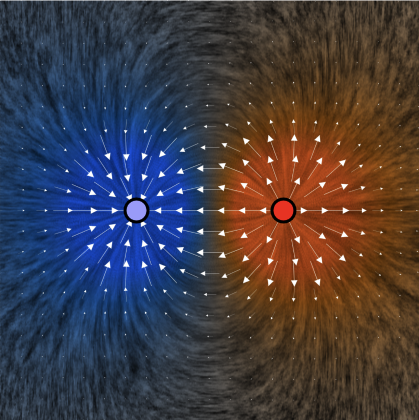

Calculus &
Linear Algebra II
Chapter 38
38 Flux of a vector field
By the end of this section, you should be able to answer the following questions:
- What is the flux of a constant vector field across a flat surface in 3D?
- What is the flux of a vector field across a plane curve in 2D?
In this section we introduce the concept of flux: In three dimensions, the flux of a vector field across a given surface is defined to be the "flow rate" of the vector field through the surface.
38 Flux of a vector field
|
Since many vector fields involve no motion (e.g., electric fields, magnetic fields), this definition can be very difficult to comprehend at first. |
 |
38 Flux of a vector field
A nice context for working with flux in order to understand its definition is by considering the velocity vector of a fluid (so now we do have motion).
38 Flux of a vector field
In three dimensions, the flux of a fluid across a surface is given in units of volume per unit time. In other words, the flux tells us how much of the fluid (volume) passes through a given surface in one second.
38 Flux of a vector field
Consider a river flowing at a constant velocity of $2m/s$ in only one direction. Now imagine placing a $3m$ square fishing net into the river so that it somehow stays perpendicular to the flow of the river. What is the flux of the water through the net?
38 Flux of a vector field
What is the flux of the water through the net?
| Vol. through net surface after 1 sec. | $\displaystyle = 3\times 3 \times 2 \times 1$ $=18 m^3$ |
Then $\underbrace{\; {\large\text{Flux}}\;}_{{\tiny\text{Amount of water through net per unit of time}}}$ $= 18 m^3/s$
38 Flux of a vector field
Now if we rotate the net through an angle $\theta$, what is the flux through the net?
38.1 Flux in 2D
Before we look at the flux of a vector field through more general surfaces, let's look at flux in two dimensions, by considering the flow of a two dimensional fluid through a curve in the $x$-$y$ plane. Note that in this context of a fluid in $2$D, flux has dimensions area per unit time.
To start, consider the problem of calculating the flux of a fluid with constant velocity $\v = 2~\i$ through a line segment $C$ perpendicular to the flow, where $C$ is given by \[ C = \left\{(x,y)~|~ x = 2, 2\leq y \leq 6\right\}. \]
38.1 Flux in 2D
Constant velocity $\v = 2~\i$ through a line segment $C$ perpendicular to the flow, where $C$ is given by $C = \left\{(x,y)~|~ x = 2, 2\leq y \leq 6\right\}.$

38.1 Flux in 2D
Now consider calculating the flux of the velocity vector $\v(x,y)$ in the $x$-$y$ plane through a curve $C$. We first divide $C$ up into arcs of length $\Delta S$, and approximate $\v$ as constant over each arc.
38.1 Flux in 2D
This constant vector over each arc shall be evaluated at a representative point in each arc, say $P^* = (x^*, y^*)$. We also approximate the arc as a straight line, so that \[ \Delta S \approx \sqrt{(\Delta x)^2+ (\Delta y)^2} \approx \norm{\r'(t)}\Delta t \]
38.1 Flux in 2D
The component of $\v$ which is perpendicular to $C$ (over $\Delta S$) is $\approx \v(P^*)\cdot \n (P^*)$.
flux through one arc $\approx \v(P^*)\cdot \n (P^*)\Delta S$.
$\Rightarrow $ total flux through $C$ $\approx \displaystyle \sum_{i}\v(P_i^*)\cdot \n (P_i^*)\Delta S_i$.
If we take the limit as $\Delta S$, we obtain an exact expression for the flux over the entire curve C as a line integral: \[ \text{Flux}= \int_C \v\cdot \n ~dS \] where $\n$ is a unit vector normal to $C$.
38.1 Flux in 2D
If we take the limit as $\Delta S$, we obtain an exact expression for the flux over the entire curve C as a line integral: \[ \text{Flux}= \int_C \v\cdot \n ~dS \] where $\n$ is a unit vector normal to $C$.
We use this expression as a definition of flux of any two dimensional vector field $\v$ across a plane curve $C$. Note then that \[ \text{dimensions of flux (in 2D)} = (\text{dimensions of }\v) \times (\text{distance}). \]
38.1.1 Evaluating flux in 2D
To evaluate the $2$D flux integral \[ \int_C \v\cdot \n ~dS, \] we need to parameterise $C$ and express all quantities in the line integral in terms of this parameterisation (similar to the computation of line integral in the definition of work done).
38.1.1 Evaluating flux in 2D
Steps to evaluate the $2$D flux integral $\int_C \v\cdot \n ~dS$:
- Parameterise $C$ by finding a $\r(t) = x(t)~\i + y(t)~\j$ with $t \in[a, b]$ that describes $C$.
- Write $\v(x,y)$ restricted to $C$ as $\v(\r(t))= \v(x(t),y(t))$.
- Compute a unit tangent vector to $C$ by using $\T(x,y) = \dfrac{\r'(t)}{\norm{\r'(t)}}$, where $\r'(t) = x'(t)~\i + y'(t)~\j$ is a tangent vector to $C$.
- Be careful of the direction of $\n$. By the definition of vector cross product, and since $\k$ is a unit vector normal to the $x$-$y$ plane, we can take $\n = \T \times \k$.
- Write $dS = \norm{\r'(t)}dt$.
-
Evaluate the $2$D flux integral as a definite integral in terms of the parameter $t$:
$\displaystyle \int_C \v \cdot \n ~dS= \int_a^b \left[ \v\left(\r(t)\right)\cdot \dfrac{\r'(t)}{\norm{\r'(t)}}\right]\norm{\r'(t)}~dt$
$\displaystyle \qquad \;\;\;= \int_a^b \left( \v\left(\r(t)\right)\cdot \left( \r'(t) \times \k\right) \right) dt$.